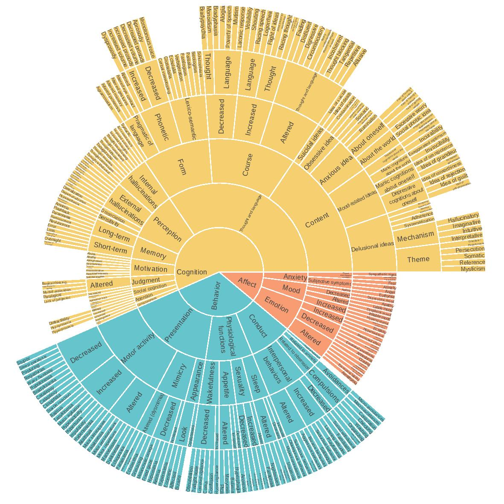
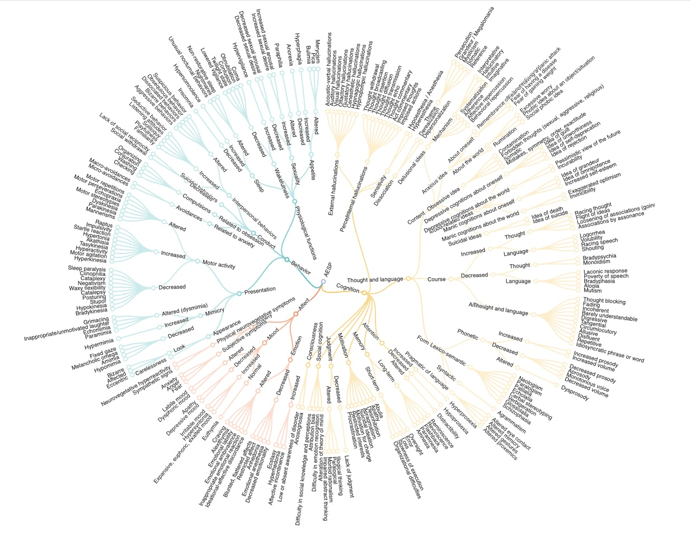
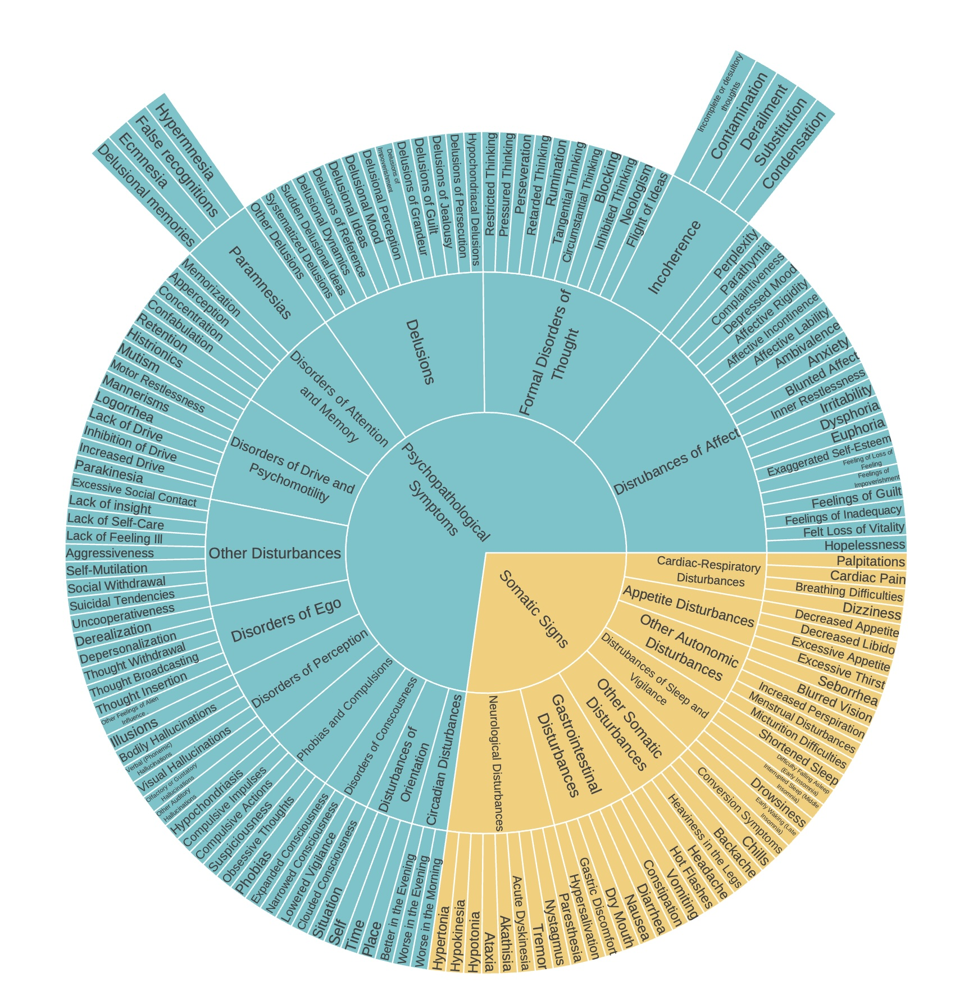
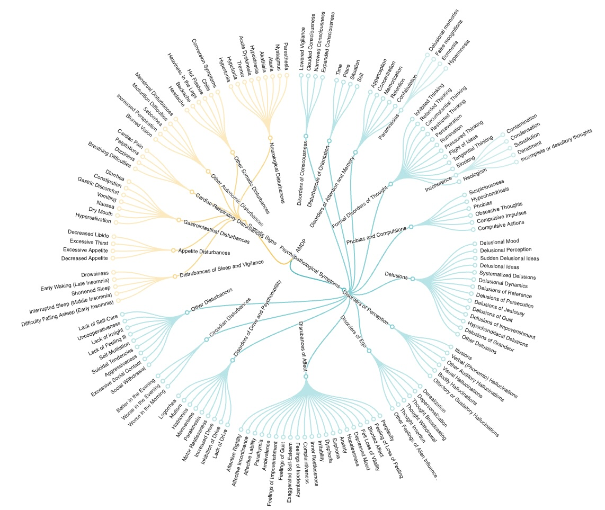

Psychiatric Semiology
Descriptive Psychopathology
“Visualization is a way to represent data, an abstraction of the real world,
in the same way that the written word can be used to tell different kinds of stories”
Data Points, Yau 2013
You may also be interested in our work about sleep semiology 🔗.
Contact: jean-arthur.micoulaud-franchi [at] chu-bordeaux.fr & vpmartin [at] inria.fr
All the figures of this website are under the CC BY-NC-SA 4.0 license

Vizualisation of the AESP and the AMDP
This section is a support to the letter entitled "The domestication of psychiatric symptoms: a proposal for the graphical visualization of the thesaurus semeioticus in adults" by Jean-Arthur Micoulaud-Franchi (Univ. Bordeaux), Vincent P. Martin (Univ. Lorraine) and Clélia Quiles (Univ. Bordeaux).
It is a response letter to the article Prioritization of Psychopathological Symptoms and Clinical Characterization in Psychiatric Diagnoses: A Narrative Review by Leucht S, van Os J, Jäger M, Davis JM published in JAMA Psychiatry on 2024 Sep 11.




Vizualisation of the AESP semiology and organization into syndromes [french]
In addition to the global AESP semiology, we also represented each syndrome defined in the French manual of psychiatry. For more information, please refer to our publication:
"La domestication de la sémiologie : proposition d’une organisation graphique du thesaurus semeioticus psychiatrique chez l’adulte", Jean-Arthur Micoulaud-Franchi, Vincent P. Martin, François Vialatte, Christophe Gauld, Elodie Gratreau, Clélia Quiles. Publié dans les Annales Médico-Psychologiques (2024) https://doi.org/10.1016/j.amp.2024.11.001 [pdf].